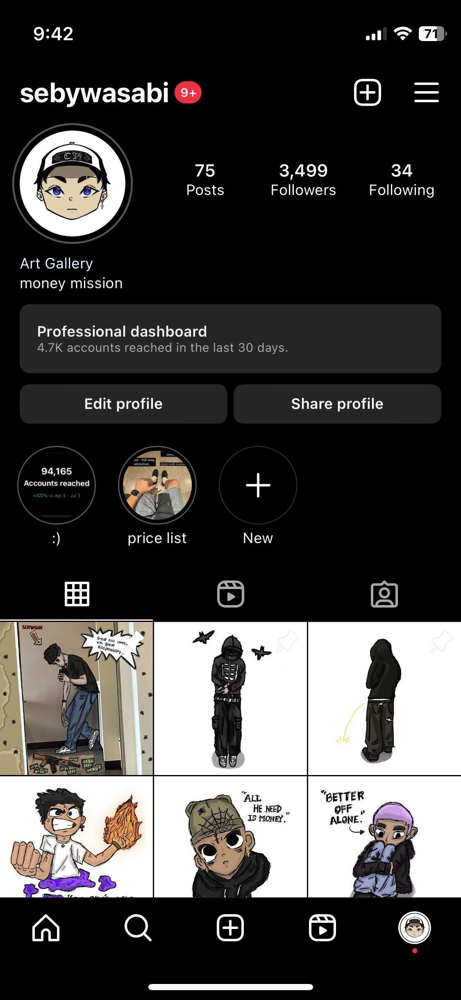

Hello, I’m Seth Boiser
I’m Seth Boiser, This is my personal portfolio. I love digital art and below are some of my recent artworks.
Recent Artworkabout me:
My name is Seth Boiser, I am from Davao City. A 21 year old digital artisti who makes cartoon like artworks. Ever since I was young I've been into drawing. I kept an album entirely for my drawings when I was young. Now that I've grown, I still draw and make a living out of it. I work with artists outside especially rappers to be exact and they pay me online.
my recent works:
here's a blog about digital art
what is a digital artist and how to become one?
Digital artists have a few career paths from which they can choose. Many of these involve designing visual effects and animated images for various media like videos and computer games. You can find digital artist work with film production, advertising, video game, and software design companies. In any digital artist role, you use computer software to bring your art to life, whether it be a drawing or a sculpture. Depending on your field, these may then become 3D, interactive graphics for websites or visual characters. You can specialize in a niche such as game design, web design, multimedia, or animation. Whichever area you choose to work in, creativity is a top focus.
what is the difference between digital artist and a graphic designer?
There are many differences between digital artists and graphic designers. While there is some overlap, a digital artist focuses first on art, whereas a graphic designer focuses on communicating a message first, using different fonts, graphics, images, and sound in some cases. A graphic designer often works in advertising or for businesses creating layouts and their duties revolve around designing ads, print projects, newsletters, and social media while keeping the target audience in mind. Knowing the audience influences your choices for color, style, and photos used in the project.
here's my social media account:

contact me:
Gmail: sebastian.boiser@jmc.edu.ph